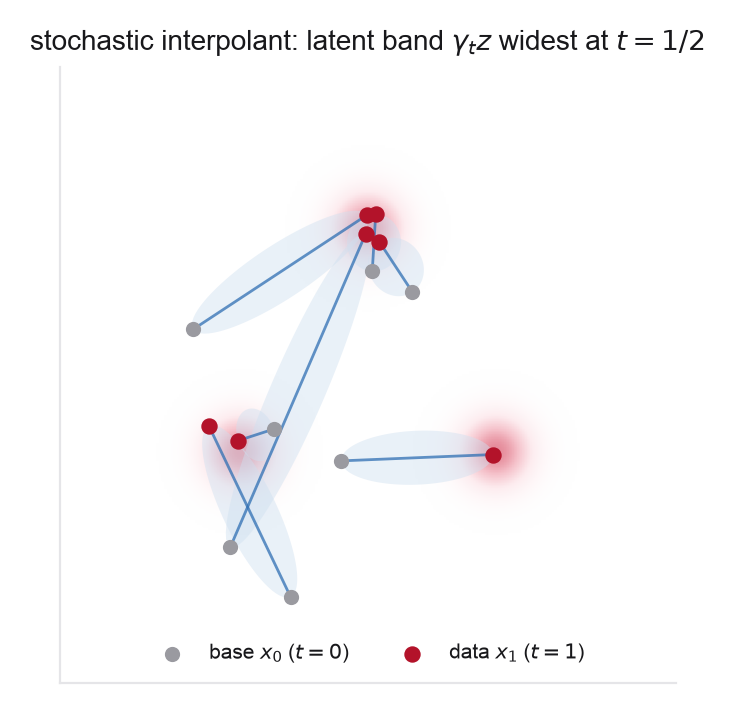
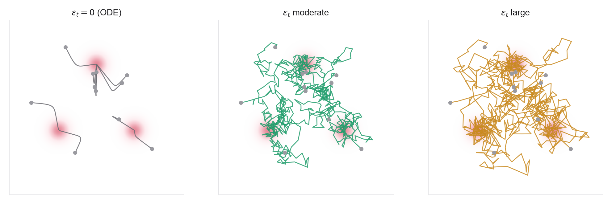
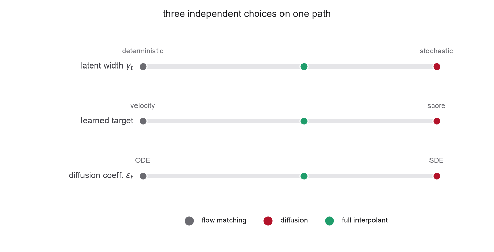
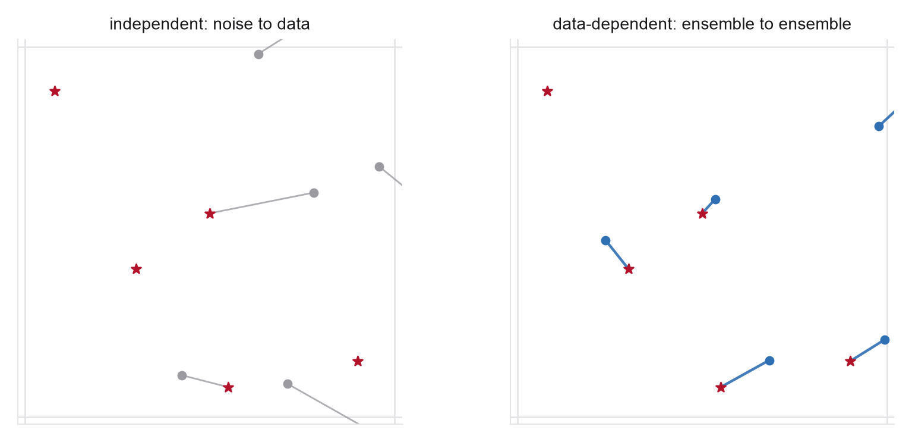

These notes condense the Week 4 readings into the ideas you need, organized by concept rather than by paper. Notation continues from Weeks 2-3, with noise at \(t=0\) and data at \(t=1\). The through-line: write one path with a latent noise term, learn a velocity and a score on it by conditional expectation, and read the deterministic flow, the noising diffusion, and every sampler between them off the single pair of fields.
4.1From two constructions to one
Two of the past weeks learned closely related objects. Week 2 fixed a Gaussian noising process, a family \(p_t\) built by corruption, and learned the score \(\nabla\log p_t\). Week 3 chose a deterministic path directly and learned a velocity. Both are conditional-mean regressions on a chosen family of densities, and for an affine Gaussian path the two learned objects are linear reparameterizations of each other. The stochastic interpolant makes the shared structure the primitive: it writes down a path with its own latent randomness, learns the velocity and the score together, and then recovers diffusion and flow matching as corners of one design space, with a continuous family of samplers connecting them.
4.2The stochastic interpolant
Fix a base \(\rho_0=\mathcal N(0,I)\) you can sample and data \(\rho_1=q\). In general, Albergo, Boffi and Vanden-Eijnden define a stochastic interpolant as \(x_t=I_t(x_0,x_1)+\gamma_t z\), where \(I_t\) is any interpolating map with \(I_0(x_0,x_1)=x_0\) and \(I_1(x_0,x_1)=x_1\). Throughout these notes we work in the spatially linear (affine) case, where \(I_t\) is a linear combination of the endpoints and the path becomes
with coefficients satisfying \(\alpha_0=1,\beta_0=0\) and \(\alpha_1=0,\beta_1=1\). For the genuinely stochastic construction take a latent width with \(\gamma_t>0\) on \(0<t<1\) and \(\gamma_0=\gamma_1=0\); the deterministic case \(\gamma_t\equiv0\) is a separate degenerate corner, recovered below, on which the score identity of §4.4 is unavailable. The endpoints are therefore exactly \(x_0\) and \(x_1\): the path starts at a base sample and ends at a data sample. The new ingredient relative to Week 3 is the latent term \(\gamma_t z\), an independent Gaussian that inflates the path in the middle and deflates to nothing at both ends. Its role is to give the marginal law a nondegenerate density with a well-defined score at every interior time, even when the data \(q\) is singular (a point cloud, a manifold), so both a velocity and a score are learnable on the same path. Setting \(\gamma_t\equiv0\) with \(\alpha_t=1-t,\beta_t=t\) is exactly the deterministic straight-line flow matching of Week 3.

4.3The velocity field and its transport equation
Let \(\rho_t\) be the law of \(x_t\). The time derivative along the path is \(\dot x_t=\dot\alpha_t x_0+\dot\beta_t x_1+\dot\gamma_t z\), a random vector; its conditional expectation given the current state is the velocity field
Exactly as in Week 3's marginalization trick, this field generates the marginal law through the continuity equation \(\partial_t\rho_t+\nabla\!\cdot(\rho_t b_t)=0\), so the probability-flow ODE \(\dot X_t=b_t(X_t)\) with \(X_0\sim\rho_0\) transports the base density onto the data. And exactly as in Week 3, the field is the minimizer of a tractable per-sample regression: draw \((x_0,x_1,z)\), form \(x_t\), and regress a network onto the random velocity \(\dot x_t\),
The minimizer is the conditional mean of \(\dot x_t\), which is \(b_t\) by definition. No ODE solve, no divergence, no likelihood, the same simulation-free move as denoising score matching and conditional flow matching, now regressing on the interpolant's own velocity.
4.4The score, and the velocity-score dictionary
The latent term makes the score elementary. Condition on \((x_0,x_1)\): then \(x_t\) is Gaussian, \(\mathcal N(\alpha_t x_0+\beta_t x_1,\gamma_t^2 I)\), so its score in \(x\) is \(-(x-\alpha_t x_0-\beta_t x_1)/\gamma_t^2=-z/\gamma_t\). Averaging over the posterior (the same tower property used for the velocity) gives the marginal score
learnable by the tractable objective \(\mathcal L_s(\theta)=\mathbb E\|\eta_\theta(x_t,t)-z\|^2\) whose minimizer is \(\eta_t(x)=\mathbb E[z\mid x_t{=}x]=-\gamma_t s_t(x)\), the interpolant's noise-prediction objective, structurally identical to \(\epsilon\)-prediction in Week 2. Both \(b_t\) and \(s_t\) are built from the same three posterior conditional expectations \(\mathbb E[x_0\mid\cdot]\), \(\mathbb E[x_1\mid \cdot]\), \(\mathbb E[z\mid\cdot]\), and those three obey one linear identity, namely \(x=\alpha_t\mathbb E[x_0\mid\cdot]+\beta_t\mathbb E[x_1\mid\cdot]+\gamma_t\mathbb E[z\mid\cdot]\). Count carefully: that identity alone is one equation for three unknowns, so it does not by itself let one field be read off another. What closes the count is an extra distributional fact, and it is worth seeing exactly which assumption supplies it.
In the standard setting of these notes, a Gaussian base \(x_0\sim\mathcal N(0,I)\) drawn independently of \(x_1\), the two Gaussians combine: \(\alpha_t x_0+\gamma_t z\sim\mathcal N(0,\sigma_t^2I)\) with \(\sigma_t^2=\alpha_t^2+\gamma_t^2\), independent of \(x_1\). So the path is distributionally one-sided, \(x_t\overset{d}{=}\beta_t x_1+\sigma_t\xi\), and \(\mathbb E[x_0\mid x_t{=}x] =-\alpha_t s_t(x)\) is a second linear relation. With it the system closes: given the coefficients (and \(\beta_t\neq0\)), any one of the velocity, the score, the noise prediction, or the denoiser determines the rest. That is the familiar Week 2 dictionary, and it holds here on the two-sided path too.
The dividing line is therefore not two-sided versus one-sided, but whether that extra fact survives. Break either hypothesis, by coupling \(x_0\) to \(x_1\) (Problem 4, and Week 5) or by using a non-Gaussian base, and \(\alpha_t x_0+\gamma_t z\) is no longer a lone Gaussian independent of \(x_1\). The second relation is gone, \(\mathbb E[x_0\mid x_t]\) is a genuinely free third function, and \(b_t\) and \(s_t\) become independent objects. That is why the framework trains a velocity and a score rather than deriving one from the other: not because the standard path demands it, but because the general one does.
4.5One set of marginals, a family of samplers
Here is the payoff, and the result that names the week. Suppose you hold the exact velocity \(b_t\) and score \(s_t\) for the marginals \(\rho_t\). Then for any non-negative diffusion schedule \(\epsilon_t\), the stochastic differential equation
has time-marginals equal to \(\rho_t\), so it too transports the base density onto the data. The proof is one line of Fokker-Planck. The extra drift \(\epsilon_t s_t=\epsilon_t\nabla\log\rho_t\) and the diffusion \(\epsilon_t\Delta\) contribute \(-\nabla\!\cdot(\epsilon_t\rho_t s_t)+\epsilon_t\Delta\rho_t\) to \(\partial_t\rho_t\), and since \(\rho_t s_t=\nabla\rho_t\) these two terms cancel exactly, leaving the probability-flow equation \(\partial_t\rho_t=-\nabla\!\cdot(\rho_t b_t)\) unchanged. The added score-drift and noise form a Langevin move that holds \(\rho_t\) stationary at each instant, so the marginals are untouched while the trajectories are not.
The consequences are the whole point. At \(\epsilon_t=0\) the SDE is the probability-flow ODE, the deterministic flow-matching sampler of Week 3. Increasing \(\epsilon_t\) makes the sampler progressively noisier and more error-correcting, and one specific schedule reproduces the reverse-time diffusion SDE of Week 2. A single trained interpolant thus yields a whole family of samplers indexed by the schedule \(\epsilon_t\), chosen after training, from deterministic transport to full stochastic denoising.
Read the theorem for what it says. The marginals coincide exactly only for the exact fields \(b_t,s_t\). With a learned, imperfect pair the different \(\epsilon_t\) no longer agree, and the theorem stops being an equivalence and becomes a license: it tells you the whole family is legitimate, so \(\epsilon_t\) is a free sampler-tuning knob rather than a modelling commitment. Which value is best is then an empirical question about your trained field and your target.

4.6Recovering flow matching and diffusion
The two earlier weeks are corners of this construction. Flow matching (Week 3) is the deterministic interpolant \(\gamma_t\equiv0\) with \(\alpha_t=1-t,\beta_t=t\), sampled at \(\epsilon_t=0\): no latent term, velocity only, ODE sampler. Diffusion (Week 2) is the one-sided interpolant for a Gaussian base: drop the explicit base term and let the latent carry it, \(x_t=\beta_t x_1+\gamma_t z\), which is exactly the forward noising process \(x_t=\alpha^{\mathrm{diff}}_t x_1+\sigma_t\epsilon\) after matching \(\beta_t\leftrightarrow \alpha^{\mathrm{diff}}_t\) and \(\gamma_t\leftrightarrow\sigma_t\); learning the score and sampling at the \(\epsilon_t\) tied to that schedule reproduces the reverse-time SDE, while \(\epsilon_t=0\) gives its probability-flow ODE. The interpolant coefficients pick the path, the choice of learned target picks the parameterization, and \(\epsilon_t\) picks the sampler; Weeks 2 and 3 each froze two of the three.
A change of endpoint convention. The one-sided form does not obey the \(\gamma_0=\gamma_1=0\) convention of §4.2, and it would be a mistake to read it as a member of that same family. There the latent vanishes at both ends and the base sample \(x_0\) supplies the \(t=0\) endpoint; here the Gaussian variable is the base, so \(\gamma_0\neq0\) (\(\beta_0=0,\ \gamma_0=1\) for a variance-preserving schedule) and it is \(\gamma_1=0\) alone that pins the data endpoint. Two-sided interpolants bridge two arbitrary densities with a latent bulge in between; one-sided interpolants are the degenerate case in which the noise is one of the two densities. This is why diffusion needs only a score and never a separate base term.

4.7Data-dependent couplings and bridges
Throughout, \((x_0,x_1)\) were independent: a fresh Gaussian base sample for each data sample. Nothing in the velocity or score derivation used independence, only that the pair has the right endpoint marginals. A data-dependent coupling draws \((x_0,x_1)\sim\pi\) with \(\pi\) dependent, and the whole construction goes through: the interpolant becomes a stochastic bridge between two meaningful distributions rather than from noise to data. Albergo et al. demonstrate this on conditional image generation, super-resolution and in-painting, where \(x_0\) is a corrupted or downsampled image and \(x_1\) the clean one. The scientific reading is ours to make: when \(x_0\) is an unrelaxed structure and \(x_1\) its relaxed counterpart, or \(x_0\) a low-fidelity and \(x_1\) a high-fidelity configuration, the trained interpolant becomes a learned, stochastic map between the two ensembles. The formal machinery does not care which reading you take, since the derivation only ever used the endpoint marginals, and that is the natural framing for translation problems in science, where both endpoints carry physical meaning and pure noise is the wrong starting distribution.

4.8Why it scales, and why science cares
The interpolant is not only cleaner bookkeeping; the freedom it exposes measurably helps. SiT holds the DiT transformer backbone fixed and turns the recipe from diffusion into an interpolant one hinge at a time, discrete to continuous time, diffusion path to linear interpolant, score to velocity, fixed sampler to a tunable SDE, and measures each hinge separately on ImageNet, with the swept diffusion coefficient \(\epsilon_t\) giving a further gain at fixed model. Read the ablation rather than the slogan: the gains from the interpolant choice and from stochastic sampling are clear, while in the parameterization table a weighted score model narrowly beats the velocity, so "every hinge helps" overstates it. For science the tunable stochastic sampler is the attraction. Molecular and materials targets are rugged multi-well Boltzmann densities; a deterministic ODE sampler is a pushforward map from the base, so it cannot add stochastic mixing or Langevin-style correction during inference, while \(\epsilon_t>0\) reintroduces both a resampling term and a pull toward high-density regions. OMatG builds a crystal generator on this framework by using stochastic interpolants for the continuous structural variables, fractional coordinates with periodic boundary conditions and lattice vectors, coupling them to discrete flow matching for the categorical atom types, and then tuning the interpolant and the ODE-or-SDE sampler; CrystalFlow (velocity-only flow) and MatterGen (diffusion) are its neighboring corners, with the caveat that the velocity/score axis really describes how each model treats the continuous fields.
4.9Looking ahead: the coupling becomes the design variable
This week fixed the interpolant and its latent width and varied the sampler. The last untouched choice is the coupling. Week 5 makes couplings and optimal transport the central tool: choose \(\pi(x_0,x_1)\) to straighten paths and reduce the transport cost of moving noise into scientific structure, with entropic OT and Sinkhorn making the minibatch approximation of Week 3 precise. Week 9 pushes the data-dependent coupling of this week to its limit: the Schrödinger bridge is the stochastic bridge between two distributions that is also entropically optimal, the right object when both endpoints are meaningful physical ensembles. The velocity and score you learned here are what both weeks re-pair and reshape.
4.10One-page recap
- A stochastic interpolant is \(x_t=I_t(x_0,x_1)+\gamma_t z\); in the spatially linear case used here \(x_t=\alpha_t x_0+\beta_t x_1+\gamma_t z\) with \(\gamma_0=\gamma_1=0\) and \(\gamma_t>0\) inside. The latent term \(\gamma_t z\) gives the marginal a smooth score at every interior time.
- The velocity \(b_t(x)=\mathbb E[\dot x_t\mid x_t{=}x]\) generates \(\rho_t\) by the continuity equation and is the minimizer of a simulation-free per-sample regression onto \(\dot x_t\).
- The score is \(s_t(x)=-\gamma_t^{-1}\mathbb E[z\mid x_t{=}x]\) for \(\gamma_t>0\), learned by regressing onto the latent \(z\). With a Gaussian base and an independent coupling the path is distributionally one-sided (\(x_t\overset{d}{=}\beta_tx_1+\sigma_t\xi\)), and velocity, score and denoiser interconvert freely; under a dependent coupling or a non-Gaussian base they are independent fields, which is why both are learned.
- Given the exact \(b_t\) and \(s_t\), the SDE \(\mathrm dX_t=[b_t+\epsilon_t s_t]\,\mathrm dt +\sqrt{2\epsilon_t}\,\mathrm dW_t\) shares the marginals \(\rho_t\) for every \(\epsilon_t\ge0\), by a one-line Fokker-Planck cancellation. With learned fields they differ, which is what makes \(\epsilon_t\) worth tuning.
- \(\epsilon_t=0\) is the probability-flow ODE (flow matching); a matched \(\epsilon_t\) is the reverse diffusion SDE. One trained model, a whole family of samplers chosen after training.
- Flow matching is the \(\gamma_t=0\) deterministic corner; diffusion is the one-sided \(x_t=\beta_t x_1+\gamma_t z\) corner, which uses a different endpoint convention (\(\gamma_0\neq0\): the latent supplies the base). Path, target, and sampler are three independent choices.
- A data-dependent coupling makes the interpolant a bridge between two meaningful ensembles (super-resolution and in-painting in the paper; unrelaxed to relaxed or low to high fidelity in our setting), the construction Week 9 turns into the Schrödinger bridge.
- SiT measures the interpolant choices one at a time at scale, and most but not all favor the interpolant recipe; OMatG builds a crystal generator on the framework, interpolants for the continuous fields and discrete flow matching for atom types, with CrystalFlow and MatterGen as the velocity-only and diffusion neighbors.
4.11References
The shorthand used in the "from the readings" notes above, with the section targets these notes rely on.
- Stochastic Interpolants — Albergo, Boffi & Vanden-Eijnden, Stochastic Interpolants: A Unifying Framework for Flows and Diffusions (arXiv:2303.08797). §2.1 definition, §2.2 transport equations and objectives, §2.3 generative models, §3.2 one-sided interpolants, §3.4 Schrödinger bridges, §4 spatially linear interpolants (§4.3 the latent and diffusion coefficient), §5.1 score-based diffusion.
- Building Normalizing Flows — Albergo & Vanden-Eijnden, Building Normalizing Flows with Stochastic Interpolants (arXiv:2209.15571). §2 for the deterministic skeleton.
- Data-Dependent Couplings — Albergo et al., Stochastic Interpolants with Data-Dependent Couplings (arXiv:2310.03725). §3.1 transport equations under a coupling, §3.2 coupling design.
- SiT — Ma et al., SiT: Exploring Flow and Diffusion-based Generative Models with Scalable Interpolant Transformers (arXiv:2401.08740). §2.3 the interpolating process, §2.4 the diffusion coefficient, §3.1 parameterization, §3.2 deterministic versus stochastic sampling (Table 6 sweeps \(\epsilon_t\)).
- Flow Matching Guide — Lipman et al., Flow Matching Guide and Code (arXiv:2412.06264). §4.8.1 "Velocity parameterizations," §10 "Relation to Diffusion and other Denoising Models."
- MIT 6.S184 notes — Holderrieth & Erives, An Introduction to Flow Matching and Diffusion Models. §2 flow and diffusion models, §3 flow matching, §4 score functions and score matching (§4.2 SDE sampling).
- OMatG — Hoellmer et al., Open Materials Generation with Stochastic Interpolants (arXiv:2502.02582). Crystal representation and the split between stochastic interpolants (continuous fields) and discrete flow matching (atomic species).
- MatterGen — Zeni et al., A generative model for inorganic materials design, Nature (2025). CrystalFlow — Luo et al., CrystalFlow: A Flow-Based Generative Model for Crystalline Materials (arXiv:2412.11693).